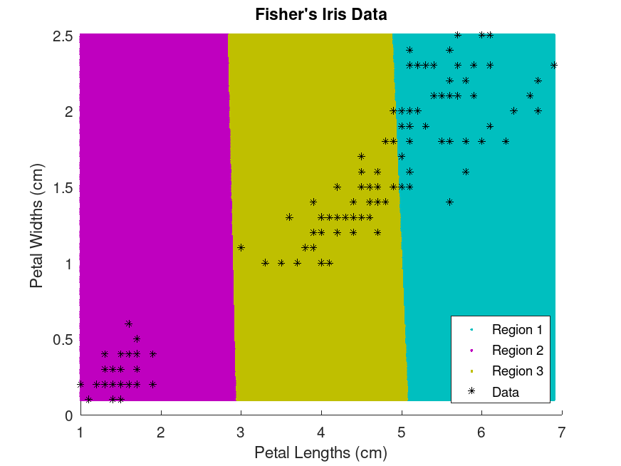
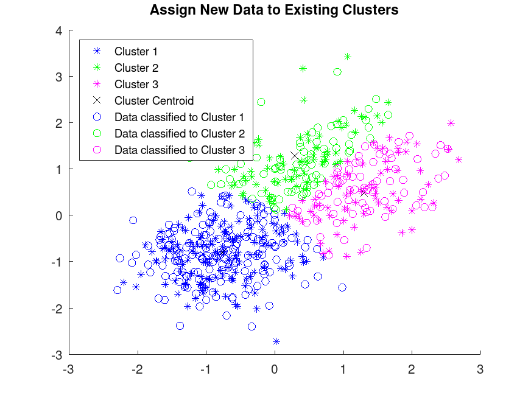

Function Reference: kmeans
- statistics: idx = kmeans (data, k)
- statistics: [idx, centers] = kmeans (data, k)
- statistics: [idx, centers, sumd] = kmeans (data, k)
- statistics: [idx, centers, sumd, dist] = kmeans (data, k)
- statistics: […] = kmeans (data, k, param1, value1, …)
- statistics: […] = kmeans (data, [],
"start", start, …)
Perform a k-means clustering of the matrix data.
If parameter "start" is specified, then k may be empty
in which case k is set to the number of rows of start.
The outputs are:
| idx | An vector whose -th element is the class to which row of data is assigned. | |
| centers | A array whose -th row is the centroid of cluster . | |
| sumd | A vector whose -th entry is the sum of the distances from samples in cluster to centroid . | |
| dist | An matrix whose -th element is the distance from sample to centroid . |
The following parameters may be placed in any order. Each parameter must be followed by its value, as in Name-Value pairs.
| Name | Description | |
|---|---|---|
"Start" | The initialization method for the centroids. |
| Value | Description | ||
|---|---|---|---|
"plus" | The k-means++ algorithm. (Default) | ||
"sample" | A subset of rows from data, sampled uniformly without replacement. | ||
"cluster" | Perform a pilot clustering on 10% of the rows of data. | ||
"uniform" | Each component of each centroid is drawn uniformly from the interval between the maximum and minimum values of that component within data. This performs poorly and is implemented only for Matlab compatibility. | ||
| numeric matrix | A matrix of centroid starting locations. The rows correspond to seeds. | ||
| numeric array | A array of centroid
starting locations. The third dimension invokes replication of the
clustering routine. Page contains the set of seeds for replicate
. kmeans infers the number of replicates (specified by the
"Replicates" Name-Value pair argument) from the size of the third
dimension. |
| Name | Description | |
|---|---|---|
"Distance" | The distance measure used for partitioning and calculating centroids. |
| Value | Description | ||
|---|---|---|---|
"sqeuclidean" | The squared Euclidean distance. i.e. the sum of the squares of the differences between corresponding components. In this case, the centroid is the arithmetic mean of all samples in its cluster. This is the only distance for which this algorithm is truly "k-means". | ||
"cityblock" | The sum metric, or L1 distance, i.e. the sum of the absolute differences between corresponding components. In this case, the centroid is the median of all samples in its cluster. This gives the k-medians algorithm. | ||
"cosine" | One minus the cosine of the included angle between points (treated as vectors). Each centroid is the mean of the points in that cluster, after normalizing those points to unit Euclidean length. | ||
"correlation" | One minus the sample correlation between points (treated as sequences of values). Each centroid is the component-wise mean of the points in that cluster, after centering and normalizing those points to zero mean and unit standard deviation. | ||
"hamming" | The number of components in which the sample and the centroid differ. In this case, the centroid is the median of all samples in its cluster. Unlike Matlab, Octave allows non-logical data. |
| Name | Description | |
|---|---|---|
"EmptyAction" | What to do when a centroid is not the closest to any data sample. |
| Value | Description | ||
|---|---|---|---|
"error" | Throw an error. | ||
"singleton" | (Default) Select the row of data that has the highest error and use that as the new centroid. | ||
"drop" | Remove the centroid, and continue computation with one fewer centroid. The dimensions of the outputs centroids and d are unchanged, with values for omitted centroids replaced by NaN. |
| Name | Description | |
|---|---|---|
"Display" | Display a text summary. |
| Value | Description | ||
|---|---|---|---|
"off" | (Default) Display no summary. | ||
"final" | Display a summary for each clustering operation. | ||
"iter" | Display a summary for each iteration of a clustering operation. |
| Name | Value | |
|---|---|---|
"Replicates" | A positive integer specifying the number of independent clusterings to perform. The output values are the values for the best clustering, i.e., the one with the smallest value of sumd. If Start is numeric, then Replicates defaults to (and must equal) the size of the third dimension of Start. Otherwise it defaults to 1. | |
"MaxIter" | The maximum number of iterations to perform for each replicate. If the maximum change of any centroid is less than 0.001, then the replicate terminates even if MaxIter iterations have no occurred. The default is 100. |
Example:
[~,c] = kmeans (rand(10, 3), 2, "emptyaction", "singleton");
See also: linkage
Source Code: kmeans
Example: 1
## Generate a two-cluster problem
C1 = randn (100, 2) + 1;
C2 = randn (100, 2) - 1;
data = [C1; C2];
## Perform clustering
[idx, centers] = kmeans (data, 2);
## Plot the result
figure;
plot (data (idx==1, 1), data (idx==1, 2), "ro");
hold on;
plot (data (idx==2, 1), data (idx==2, 2), "bs");
plot (centers (:, 1), centers (:, 2), "kv", "markersize", 10);
hold off;
|

Example: 2
## Cluster data using k-means clustering, then plot the cluster regions.
## Load Fisher's iris data set and use the petal lengths and widths as
## predictors.
load fisheriris
X = meas(:,3:4);
figure;
plot (X(:,1), X(:,2), "k*", "MarkerSize", 5);
title ("Fisher's Iris Data");
xlabel ("Petal Lengths (cm)");
ylabel ("Petal Widths (cm)");
## Cluster the data. Specify k = 3 clusters.
[idx, C] = kmeans (X, 3);
x1 = min (X(:,1)):0.01:max (X(:,1));
x2 = min (X(:,2)):0.01:max (X(:,2));
[x1G, x2G] = meshgrid (x1, x2);
XGrid = [x1G(:), x2G(:)];
idx2Region = kmeans (XGrid, 3, "MaxIter", 1, "Start", C);
figure;
gscatter (XGrid(:,1), XGrid(:,2), idx2Region, ...
[0, 0.75, 0.75; 0.75, 0, 0.75; 0.75, 0.75, 0], "..");
hold on;
plot (X(:,1), X(:,2), "k*", "MarkerSize", 5);
title ("Fisher's Iris Data");
xlabel ("Petal Lengths (cm)");
ylabel ("Petal Widths (cm)");
legend ("Region 1", "Region 2", "Region 3", "Data", "Location", "SouthEast");
hold off
warning: kmeans: failed to converge in 1 iterations
warning: called from
kmeans at line 442 column 7
build_DEMOS at line 94 column 11
function_texi2html at line 286 column 14
package_texi2html at line 278 column 7
|


Example: 3
## Partition Data into Two Clusters
X = [randn(100,2)*0.75+ones(100,2); randn(100,2)*0.5-ones(100,2)];
figure;
plot (X(:,1), X(:,2), ".");
title ("Randomly Generated Data");
[idx, C] = kmeans (X, 2, "Distance", "cityblock", ...
"Replicates", 5, "Display", "final");
figure;
plot (X(idx==1,1), X(idx==1,2), "r.", "MarkerSize", 12);
hold on
plot(X(idx==2,1), X(idx==2,2), "b.", "MarkerSize", 12);
plot (C(:,1), C(:,2), "kx", "MarkerSize", 15, "LineWidth", 3);
legend ("Cluster 1", "Cluster 2", "Centroids", "Location", "NorthWest");
title ("Cluster Assignments and Centroids");
hold off
Replicate 1, 5 iterations, total sum of distances = 188.577.
Replicate 2, 4 iterations, total sum of distances = 188.577.
Replicate 3, 5 iterations, total sum of distances = 188.577.
Replicate 4, 5 iterations, total sum of distances = 188.577.
Replicate 5, 4 iterations, total sum of distances = 188.577.
Best total sum of distances = 188.577
|


Example: 4
## Assign New Data to Existing Clusters
## Generate a training data set using three distributions.
X = [randn(100,2)*0.75+ones(100,2); ...
randn(100,2)*0.5-ones(100,2); ...
randn(100,2)*0.75];
## Partition the training data into three clusters by using kmeans.
[idx,C] = kmeans(X,3);
## Plot the clusters and the cluster centroids.
figure
gscatter (X(:,1), X(:,2), idx, "bgm", "***");
hold on
plot(C(:,1),C(:,2),'kx');
legend('Cluster 1','Cluster 2','Cluster 3','Cluster Centroid')
## Generate a test data set.
Xtest = [randn(10,2)*0.75+ones(10,2); ...
randn(10,2)*0.5-ones(10,2); ...
randn(10,2)*0.75];
## Xlassify the test data set using the existing clusters.
## Find the nearest centroid from each test data point by using pdist2.
D = pdist2 (C, Xtest, "euclidean");
[group, ~] = find (D == min (D));
## Plot the test data and label the test data using idx_test with gscatter.
gscatter (Xtest(:,1), Xtest(:,2), group, "bgm", "ooo");
legend("Cluster 1", "Cluster 2", "Cluster 3", "Cluster Centroid", ...
"Data classified to Cluster 1", "Data classified to Cluster 2", ...
"Data classified to Cluster 3", "Location", "NorthWest");
title ("Assign New Data to Existing Clusters");
|
